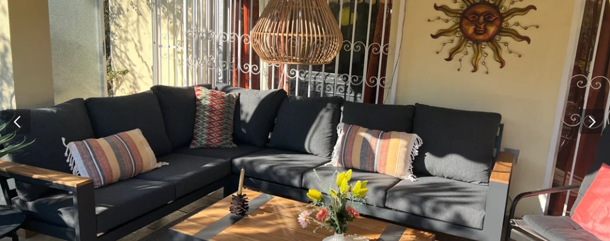
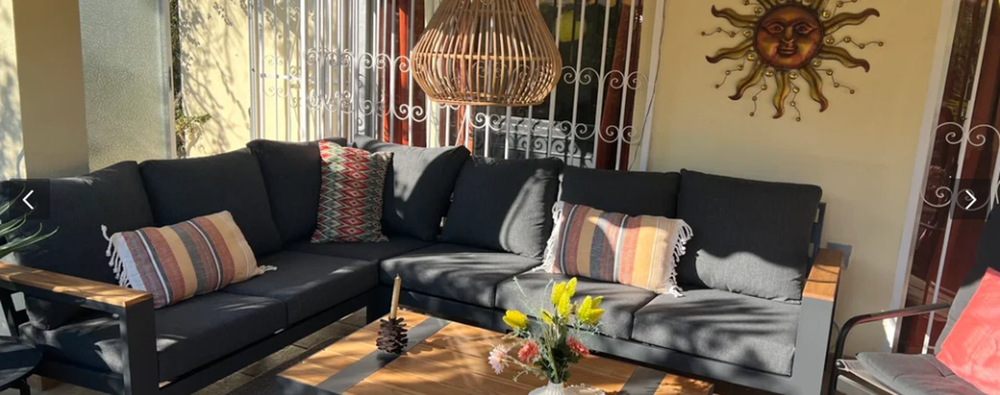
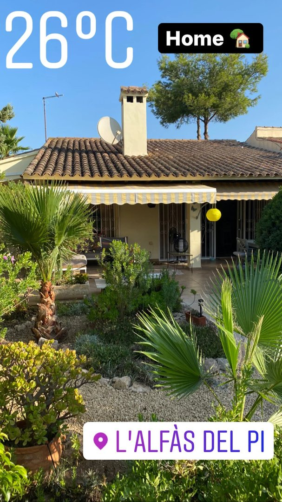
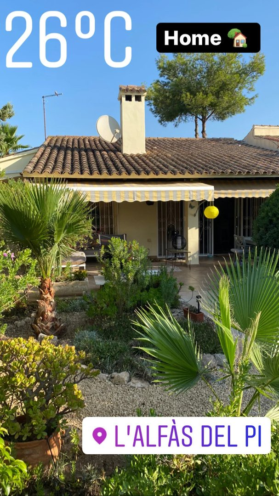
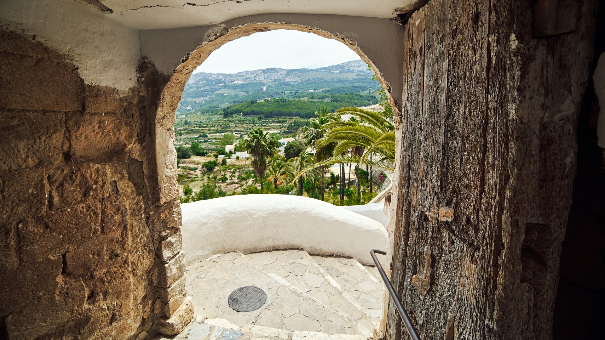
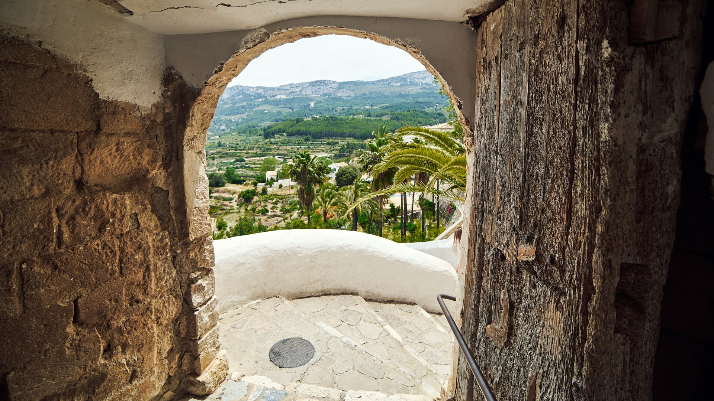
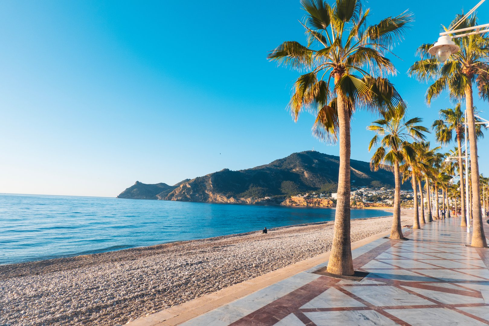
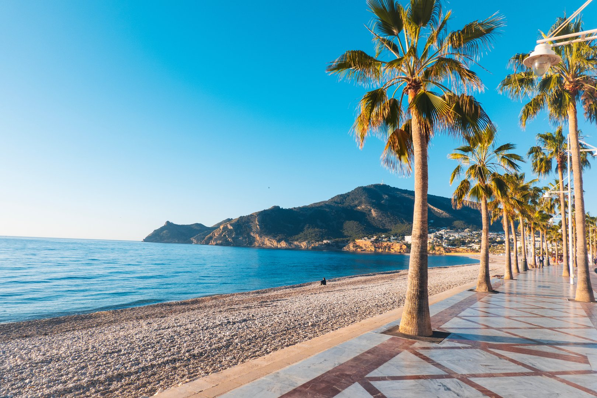

Een kijkje in ons huis
Ontdek Casa Mi Sueño in beeld. Van zonnige ochtenden bij het zwembad tot gezellige avonden op het terras. Laat je inspireren door de sfeer van ons Spaanse thuis.
Ons thuis in beeld
Foto's zeggen soms meer dan duizend woorden. Hier zie je waarom wij zo van deze bijzondere plek houden. Van die ochtenden waarop de zon het zwembadwater laat glinsteren, tot gezellige avonden op het terras waar de tijd even stil lijkt te staan. We hopen dat deze beelden je een gevoel geven van de warmte en rust die ons huis uitstraalt.

 



 



Impressies van de omgeving
Een kijkje in de prachtige streek rondom Casa Mi Sueño.
Van adembenemende bergdorpjes en kristalheldere watervallen tot historische kastelen en een schitterende kustlijn – de Costa Blanca biedt voor ieder wat wils. Dit is waarom we zo van deze regio houden en waarom je je hier ongetwijfeld direct thuis zult voelen.
 

 
